Views, Dialogs and Toolbar
Almost every view has a menu that may contain additional configuration settings like filters, layout settings, and so on. The view menu was often overlooked and we expect that this change will help users to find it.

The related UI has changed a bit to improve its usage and accessibility:
- The widget item is now a regular toolbar item (button-like)
- An icon is shown
- Right-clicking on the tool item works and shows typical actions, including Hide
- The proposals are now a regular dialog, centered on the workbench
Loading the proposals has been improved as well to avoid UI freezes when loading proposals.
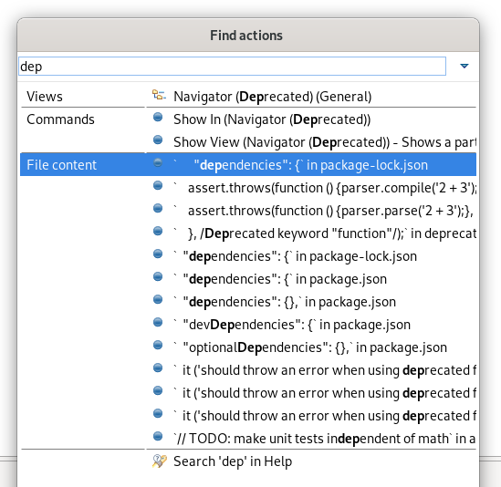
If the Quick Text Search bundle wasn't started yet, you may miss those matches. In this case, you can use Find Actions itself to activate the Quick Text Search by finding and selecting the Activate bundle for 'File content' proposals entry.
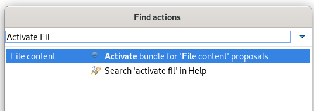
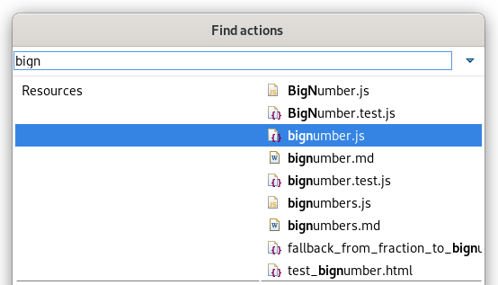
F2 shortcut or Rename context menu) will start an inline rename for normal resources when other files aren't affected by the rename.
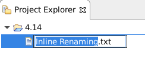
In cases where other files are affected by the rename, or the rename operation is customized, the rename dialog will appear as it previously did.
Text Editors

You can see the available quick-fixes by clicking on the message.

You can enable it on preference page General > Editors > Text Editors and set Show Code Minings for Annotations to:
- None (default)
- Error
- Errors / Warnings
- Errors / Warnings /Info
The new setting is called Remove multiple spaces on backspace/delete and is found on the General > Editors > Text Editors preference page.
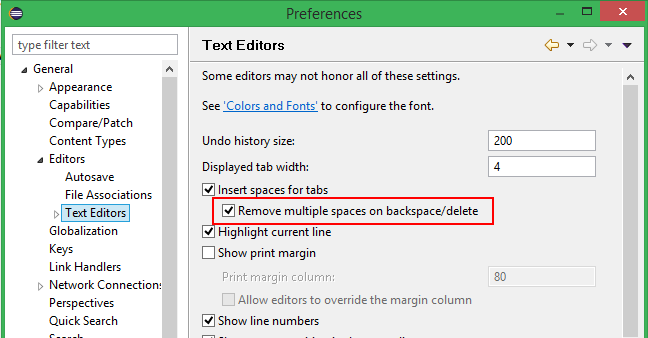
Debug
Before collapsing:
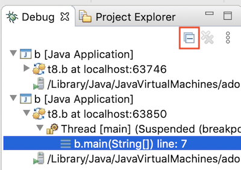
After collapsing:
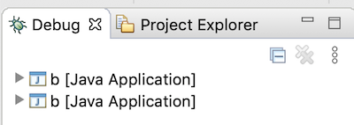
\b) and
carriage return (\r).
This feature is disabled by default. You can enable it on the Run/Debug > Console preference page.
Themes and Styling
ExpandableComposite and Section was reworked to give you more control over their styling.
In dark mode, those elements now integrate better with other Form elements.
Old:
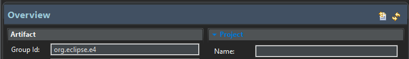
New:
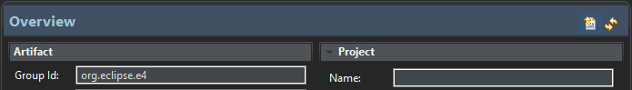
Old:
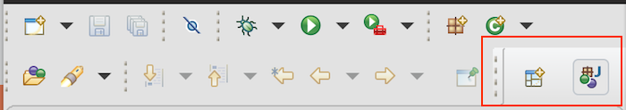
New:
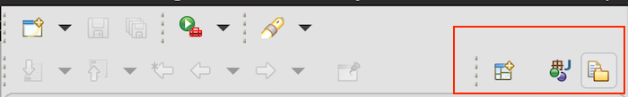
The styling of the widgets is also not based on the selected view anymore, which makes the UI more consistent.
General Updates
include task (available in the Ant library since 1.8.0) is now fully recognized by the ant-ui-plugin and validated accordingly.